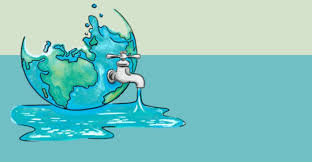

Water is necessary for life. Water is needed for domestic, agricultural and industrial purposes.
Three-fourth of Earth's surface is covered by water bodies.
97 per cent of this water is present in oceans as salt water and is unfit for human consumption.
Fresh water accounts for only about 2.7 per cent.
Nearly 70 per cent of this occurs as ice sheets and glaciers n Antarctica and other inaccessible places.
Only one per cent of fresh water is available and fit for human use.
So it is very important to conserve this precious resource.

And yet we are contaminating the existing water resources with sewage, toxic chemicals and other wastes.
Increasing population and rapid urbanisation has led to over-use of water resources leading to water pollution and scarcity.
Water scarcity can be defined as a situation when people don't have enough water to fulfil their basic needs.
India is one of the many countries that are facing water scarcity today. In Rajasthan and some parts of Gujarat, women have to cover long distances on foot in order to get a pot of water.
In cities like Bangalore, a family has to spend from Rs. 15 to Rs. 20 to meet their daily water needs. The problem becomes severe during summer months when availability of water decreases again.
A recent study has revealed that about 25 per cent of urban population lack the accessibility to fresh water. Also there are several cases of privatisation of water bodies. This often leads to water scarcity in the nearby areas.
There are different methods to deal with water scarcity. Rain water harvesting is the best and most suitable method. Forest and other vegetation cover reduce surface runoff and recharge ground water.
So, practise afforestation. We can also promote water conservation through media and by conducting public awareness programmes.
By practising these simple steps we can conserve water and ensure the availability of water to future generations. So don't tarry; start saving each and every drop of water.